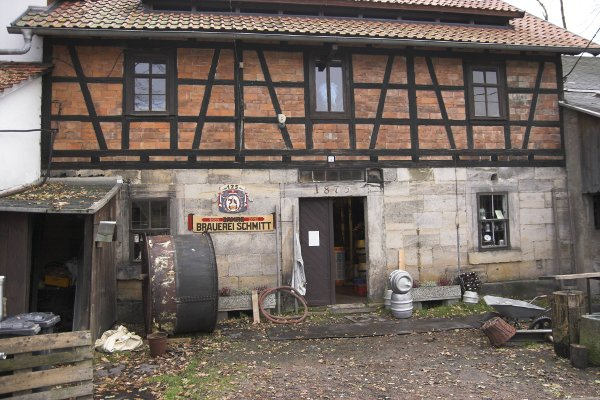
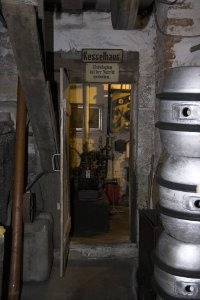
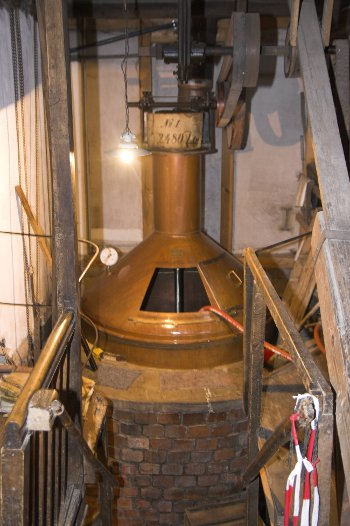
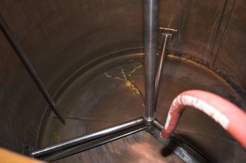
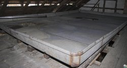
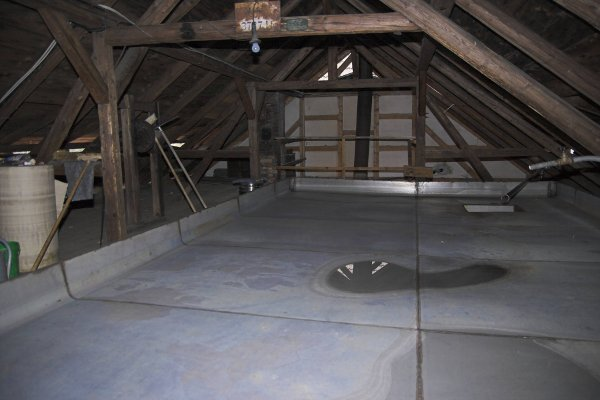
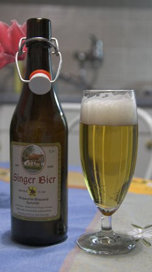

These are pictures from a small brewery in Singen (Thuringia, Germany). I first visited this brewery when I studied at the nearby University and returned in November of 2009. That's also when I took these pictures.
The brewery as seen from the road. The large building in the front is the tap room while the building behind houses the brewery. Note the hop trellis in the front of the tap roomThe entry to the brewery. It has been operating since 1885. The large back drum next to the shed is an old lauter tunA look towards the boiler room (Kesselhaus) The old steam engine. This steam engine used to provide mechanical power to the whole brewery though a system of belts. It has been replaced by electrical motors.Looking at the kettle from the brewery's floor. In front of the stairs, below the pipe sticking out of the wall, would be the lautertun which was in need of repair. Aforementioned pipe would drain the mash from the kettle into the lauter tunbrewing between 1850 and 1900]]).The inside of the boil kettle. Note the drag chains on the mash mixer.As mentioned before, the lauter tun was out of commission and needed repair.
Once the boil is complete the wort is run through a hopback (Hopfenseier) before it is pumped to the cool ship located under the roof Cool shipThis brewery is one of the few German breweries which still use a cool ship to cool the wort. The reason is obvious: the exposure of a large wort surface to the ambient air carries a high risk of contaminationAfter the cool ship a cascade chiller (Berieslungskuehler) was used to aerate and chill the wort to pitching temperatures. This one is out of commission and the brewery now uses a plate chiller. I was unfortunately not able to look at the fermeters and lagering cellar Inside the tap room. November is not exactly a busy season and I didn't stay either. I bought a few bottles and enjoyed them at home. The brewery is a very popular destination during the warmer months. Especially on Ascension Day (the German Father's day) where the male German population is on a pilgrimage to their favorite pubs and beer gardensThe brewery brews only one type of beer: a Pilsner.